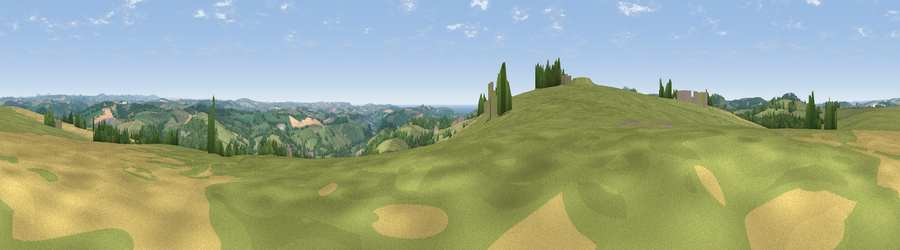

Viewpoint near Lostwithiel
#6374 in England · top 15% of its area beats it · near LostwithielWhere it is
The exact computed spot (SX 09225 60725). Click the marker for map links.
The view, rendered

A 360° render of this exact spot computed from the terrain model, tree cover and land cover — summer colours, afternoon light, calibrated against photographs of famous viewpoints. Real trees, hedges and buildings will differ in detail.
The panorama
Grey silhouette: terrain skyline in each direction (720 bearings, Earth curvature and refraction included). Dashed green: skyline with trees (+15 m) and buildings (+8 m) as obstacles. Blue strip: how far the ground is visible on each bearing.
Where the view opens
Wedge length = distance to the farthest visible ground on that bearing (vegetation-aware). Rings at 10, 25 and 50 km.
What fills the view
60% grassland · 20% woodland · 16% cropland · 2% water · 1% built-up
Angular shares of the visible panorama (visual magnitude), not map area. Landscape diversity 0.46 (0–1 Shannon).
Key numbers
More beautiful places nearby
The staircase of upgrades: each row has a higher view potential than everything closer. Driving times are estimates from straight-line distance, calibrated against real road routing — check an actual route before setting out.
| Place | Direction | Drive | Score |
|---|---|---|---|
| Viewpoint near Lanlivery | SW · 0 km | ~1 min | 72.0 |
| Viewpoint near Lanivet | NW · 3 km | ~8 min | 73.1 |
| Viewpoint near Trethurgy | SW · 8 km | ~17 min | 84.1 |
| Viewpoint near Stenalees | WSW · 10 km | ~19 min | 88.0 |
| Viewpoint near Crackington Haven | N · 34 km | ~52 min | 88.1 |
| Viewpoint near Combe Martin | NNE · 101 km | ~125 min | 88.9 |
| Holdstone Hill | NNE · 102 km | ~126 min | 90.2 |
| The Knoll | ENE · 146 km | ~170 min | 91.0 |
50.41534, -4.68663 · source: screening · position refined by local search. Computed location — check access rights before visiting.